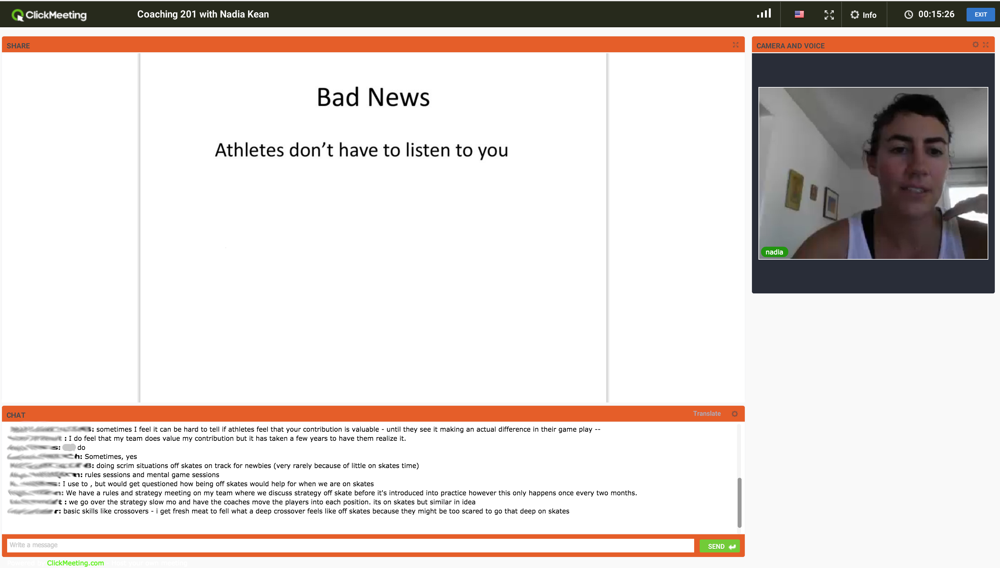
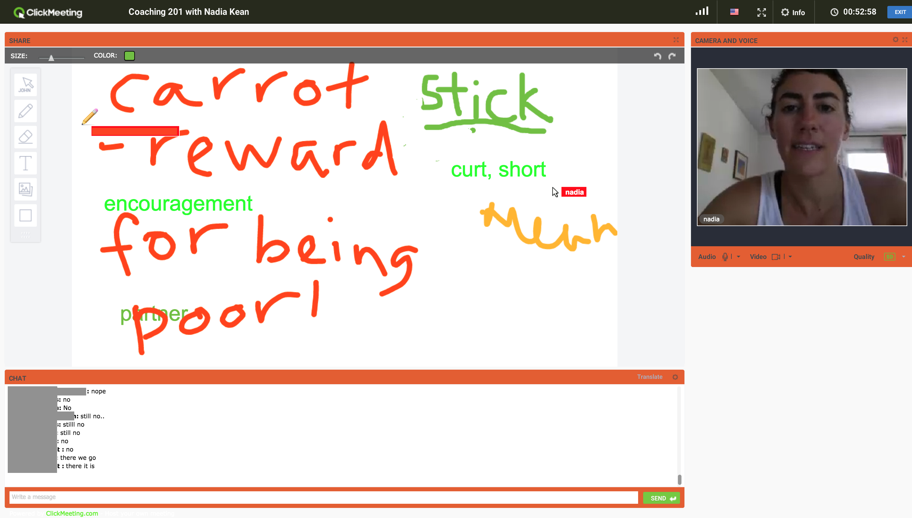

UK Coaching: Rule 56, Webinars, and more!
As part of our short series on Coaches and Coaching initiatives in the UK (which started with a look at the Derby Form Check initiative), it would be remiss of us not to cover this next topic:
 Logo by Lee Moyer Designs
Logo by Lee Moyer Designs
Rule 56, the North-of-England based coaching business responsible for the UK's first Coaching Summit last year, have not been resting on their laurels.
Continuing their association with Texas Rollergirls' Smarty Pants, (also of Get Smarty Coaching) Rule 56 have been spreading communication via their series of Coaching Webinars.
Hosted on ClickMeeting, the Webinars make use of videoconferencing technology to allow coaches and skaters from around the world to attend a virtual seminar-like experience - with the advantage that collaboration is enhanced by shared whiteboards and the like.
SRD attended two of these hour-long sessions, where Smarty took the attendees (representing leagues from Illinois through Spain, and within the UK from Southhampton all the way up to Orkney) through an engaging look at a particular topic. In our cases, these were the "general purpose" introductory Coaching sessions - called Coaching 101 and 201 on the model of American University course numbering - which covered concepts such as "how to coach adults", "different styles of interaction when coaching", and so on.
The participants were all engaged regularly by Smarty - and the advantage of the online format was that Smarty could always look back at the chat stream at a later moment, without breaking her flow, to pick up responses and questions. This was definitely handled well as a component of the seminar - whilst Smarty stuck to her slides generally, the responses from the attendees were woven into variation and extension on each topic as it was addressed.

Explicitly collaborative "brainstorming" sessions were also well managed, with the shared whiteboard eliciting some genuinely free discussion, as you can see below:

We spoke to Steph Howarth, of Tiger Bay Brawlers, who also participated in both sessions, who was equally positive. "Although I've been playing roller derby for a while, I'm relatively new to coaching. So it was great to have the chance to learn from Smarty's experience - she's clearly cares passionately about good coaching. I was particularly interested in learning how to structure practices and communicate my ideas better. Smarty's seminars really helped with this - I came away with a heap of new ideas."
The remaining sessions are still available to book from the Rule 56 Facebook Events page: https://www.facebook.com/pg/rule56/events/ , or the ClickMeeting link earlier in the article.
The next session will be on "Indicators in Coaching", on the 5th June - there's still time to book this! After that, the 12th sees a session titled "Creating Team Success", and the 19th a seminar on dealing with "Questions at Practice".
Other initiatives on the way from Rule 56, apart from actually coaching people, include a series of bootcamps - starting with one at the most northerly league in the UK, Orkney ViQueens! This is going to be an exciting one to attend, as Team England (and Rainy City)'s Missy Rascal is making her way up to lead the event as well.
You can catch up with Rule 56 at their coaching venue in Manningham Sports Centre in Bradford, online at their webinar series, or meet Hydra (#56 herself) at Euro Derby Con in mid-July, Barcelona!